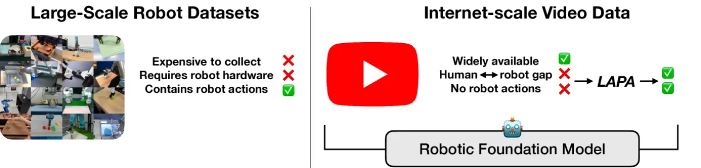
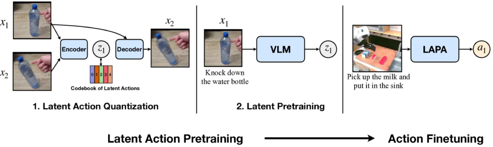
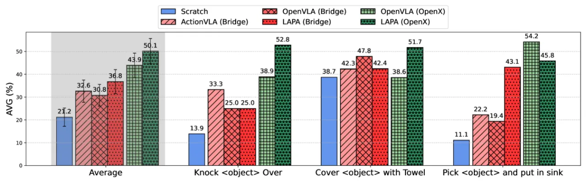
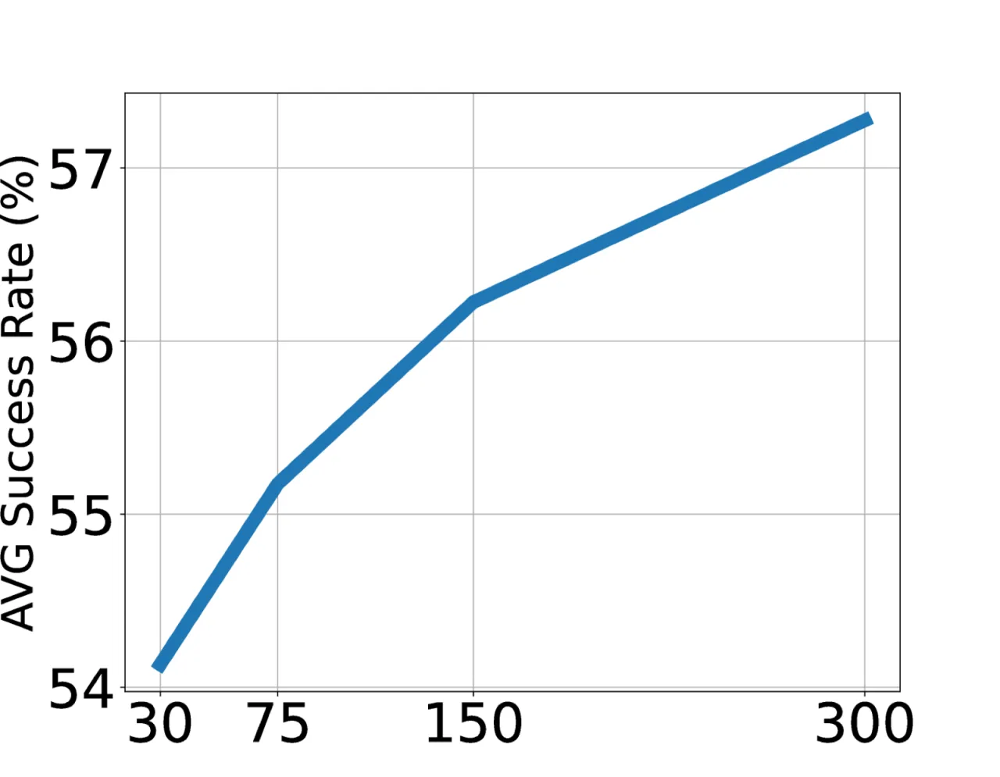

LAPA（Latent Action Pretraining for general Action models）利用 VQ-VAE 从无动作标注的互联网视频中自动发现离散 latent action，在无需机器人遥操作数据的情况下预训练 VLA 模型，最终通过小规模有标注数据微调映射到真实机器人指令，显著超越现有最优方法 OpenVLA，同时实现约 30× 的预训练效率提升。
现有 Vision-Language-Action (VLA) 模型的预训练依赖于机器人遥操作收集的有标注动作数据， 这使得可用数据规模极为有限。互联网上存在海量的人类操作视频（如 YouTube、Something-Something 等）， 却因缺少机器人动作标签而无法直接用于 VLA 预训练。 如何利用这些无标注视频数据，是扩展机器人基础模型的核心瓶颈。
"We introduce LAPA, an unsupervised method for pretraining Vision-Language-Action (VLA) models without ground-truth robot action labels."

LAPA 将预训练分为三个阶段：首先用 VQ-VAE 从视频帧对中学习离散 latent action； 接着让 VLM 从视频观测和语言指令中预测这些 latent action（行为克隆）； 最后在小规模有标注机器人数据上微调，将 latent action 映射为真实机器人指令。

编码器采用 C-ViViT 架构，输入当前帧与未来帧（间隔 H 步），通过 cross-attention 提取"帧间变化"， 输出离散 latent action token zt（词表大小 KL，默认 84=4096 种）。 解码器在给定 zt 和当前帧的条件下重建未来帧。 为防止梯度塌缩，使用 NSVQ（Normalized Straight-Through Vector Quantization）替代标准 VQ。 整个过程完全自监督，无需任何动作标注。
以预训练 VLM（7B 参数）为骨干，冻结视觉编码器，对语言模型参数进行行为克隆训练： 给定视频帧序列和语言任务描述，预测对应的 latent action token 序列。 训练数据可以是任意无标注视频（如 Open-X Embodiment 数据集或 Something-Something V2 人类视频）， 无需机器人遥操作数据。
仅需少量有标注的机器人演示数据：移除 latent action head，替换为任务专用 action head， 微调模型将学到的 latent 表征映射到真实机器人端效器动作。 由于 Stage 2 已学到丰富的视觉-语言-动作表征，Stage 3 收敛快、所需数据量少。
评估在三个基准上进行：Language Table 仿真、SIMPLER 仿真（Open-X 子集）、 以及真实世界桌面操作（pick、cover、knock 三类任务，共 54 次 rollout）。 对比基线包括 Scratch、UniPi、VPT、ActionVLA、OpenVLA 等。
| 模型 | In-Domain Seen | In-Domain Unseen | Cross-Task Seen | Cross-Task Unseen | Cross-Env Seen | Cross-Env Unseen |
|---|---|---|---|---|---|---|
| Scratch | 15.6±9.2 | 15.2±8.3 | 27.2±13.6 | 22.4±11.0 | 15.6±9.2 | 15.2±8.3 |
| UniPi | 22.0±12.5 | 13.2±7.7 | 20.8±12.0 | 16.0±9.1 | 13.6±8.6 | 12.0±7.5 |
| VPT | 44.0±7.5 | 32.8±4.6 | 72.0±6.8 | 60.8±6.6 | 18.0±7.7 | 18.4±9.7 |
| LAPA | 62.0±8.7 | 49.6±9.5 | 73.2±6.8 | 54.8±9.1 | 33.6±12.7 | 29.6±12.0 |
| ActionVLA | 77.0±3.5 | 58.8±6.6 | 77.0±3.5 | 58.8±6.6 | 64.8±5.2 | 54.0±7.0 |
LAPA 在 In-Domain Seen 上从 Scratch 的 15.6% 提升至 62.0%，Cross-Env Seen 从 15.6% 提升至 33.6%， 显示出跨环境泛化能力。ActionVLA 使用有标注动作数据预训练，作为上界参考。

| 模型 | Seen Obj. Unseen Combo | Unseen Obj. | Unseen Instr. | 平均 AVG |
|---|---|---|---|---|
| Scratch | 18.0 | 20.3 | 25.4 | 21.2 |
| ActionVLA (Bridge) | 38.3 | 31.8 | 27.7 | 32.6 |
| OpenVLA (Bridge) | 35.6 | 34.6 | 22.1 | 30.8 |
| LAPA (Bridge) | 43.4 | 31.4 | 35.6 | 36.8 |
| OpenVLA (Open-X) | 46.2 | 42.1 | 43.4 | 43.9 |
| LAPA (Open-X) | 57.8 | 43.9 | 48.5 | 50.1 |
| LAPA (Human Videos) | 36.5 | 37.4 | 28.1 | 34.0 |
LAPA 使用 Something-Something V2（人类手部操作视频，无机器人数据）进行预训练后， 在真实机器人任务上仍能超越 OpenVLA (Bridge) 的平均成功率（34.0% vs. 30.8%）， 证明 latent action 空间可跨体态迁移（embodiment transfer）。

论文明确指出："LAPA underperforms compared to action pretraining when it comes to fine-grained motion generation tasks like grasping." 在需要精确末端执行器控制的抓取任务中，LAPA 与使用有标注动作数据预训练的 ActionVLA 相比仍有差距， 例如在 pick-and-place 任务中 OpenVLA 在部分精细抓取场景优于 LAPA。
"Similar to prior VLAs, LAPA also encounters latency challenges during real-time inference." 作为基于大型语言模型的 VLA，LAPA 继承了 VLA 家族共有的推理速度瓶颈， 尚未针对在线控制进行专门优化。
当前实验主要集中于桌面操作场景。论文指出尚未探索 LAPA 在导航、自动驾驶等其他 机器人应用领域（"beyond manipulation videos, such as those from self-driving cars, navigation"） 的适用性，这些场景的泛化能力有待验证。